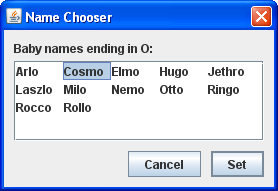
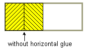

Lección: Disponer Componentes Dentro de un Contenedor
Cómo Usar BoxLayout
Nota: Esta lección cubre la escritura de código de diseño a mano, lo cual puede ser desafiante. Si no está interesado en aprender todos los detalles de la gestión del diseño, preferirá usar el gestor de diseño
GroupLayout combinado con una herramienta de construcción para diseñar su IGU.
Una de tales herramientas de construcción es el
EID NetBeans. De otra manera, si quiere
codificar a mano y no quiere usar GroupLayout, entonces se recomienda GridBagLayout
como el gestor de diseño más flexible y potente.
Si está interesado en usar JavaFX para crear su IGU, vea Trabajar Con Diseños en JavaFX.
El paquete Swing incluye un gestor de diseño de propósito general de nombre
BoxLayout
. BoxLayout apila sus componentes uno encima del otro o los coloca en una fila
─ su elección. Podría pensar de ello como una versión de
FlowLayout, pero con mayor funcionalidad. Aquí tiene una imagen de una
aplicación que demuestra el uso de BoxLayout para visualizar un columna centrada de componentes:

Pulsa el botón Lanzar para ejecutar BoxLayoutDemo usando Java™ Web Start ( descargue KDJ 7 o posterior). Alternativamente, para compilar y ejecutar el ejemplo usted mismo, consulte el índice de ejemplos.
Puede ver el código en
BoxLayoutDemo.java.
La siguiente figura muestra un IGU que usa dos instancias de BoxLayout. En la parte superior del
IGU, un diseño de caja de-arriba-a-abajo coloca un etiqueta encima de un panel de desplazamiento. En la parte
infoerior del IGU, un diseño de caja de izquierda-a-derecha coloca dos botones uno al lado del otro. Un
BorderLayout combina las dos partes del IGU y se asegura de que cualquier exceso de espacio sea
dado al panel de desplazaminto.

Puede encontrar enlaces para ejecutar ListDialog y para sus ficheros fuente en el índice de ejemplos para Usar Componentes de Swing.
El siguiente código, tomado de
ListDialog.java
, coloca el IGU. Este código está en el constructor del diálogo, e cual es implementado como una subclase
de JDialog. Las lineas en negrita de código configuran los diseños de caja y le añade componentes.
JScrollPane listScroller = new JScrollPane(list);
listScroller.setPreferredSize(new Dimension(250, 80));
listScroller.setAlignmentX(LEFT_ALIGNMENT);
...
//Coloca la etiqueta y el panel de desplazamiento de arriba a abajo.
JPanel listPane = new JPanel();
listPane.setLayout(new BoxLayout(listPane, BoxLayout.PAGE_AXIS));
JLabel label = new JLabel(labelText);
...
listPane.add(label);
listPane.add(Box.createRigidArea(new Dimension(0,5)));
listPane.add(listScroller);
listPane.setBorder(BorderFactory.createEmptyBorder(10,10,10,10));
//Coloca los botones de izquierda a derecha.
JPanel buttonPane = new JPanel();
buttonPane.setLayout(new BoxLayout(buttonPane, BoxLayout.LINE_AXIS));
buttonPane.setBorder(BorderFactory.createEmptyBorder(0, 10, 10, 10));
buttonPane.add(Box.createHorizontalGlue());
buttonPane.add(cancelButton);
buttonPane.add(Box.createRigidArea(new Dimension(10, 0)));
buttonPane.add(setButton);
//Pone todas las cosas juntas, usando el BorderLayout del panel de contenido.
Container contentPane = getContentPane();
contentPane.add(listPane, BorderLayout.CENTER);
contentPane.add(buttonPane, BorderLayout.PAGE_END);
La primera línea en negrita crea un diseño de caja de-arriba-a-abajo y lo configura como el gestor de diseño
para listPane. Los dos argumentos a el constructor BoxLayout son el contenedor que
maneja y el eje a lo largo del cual los componentes serán distribuidos. La constante PAGE_AXIS
especifica que los componentes deben distribuirse en la dirección en que las líneas fluyen a través de una
página según lo determinen la propiedad ComponentOrientation de los contenedores de destino.
La constante LINE_AXIS especifica que los componentes deberán ser colocados en la dirección de
una línea de texto como es determinado por la propiedad ComponentOrientation del contenedor de
destino. Estas constantes permiten la internacionalización, al colocar los componentes en sus contenedores con
la orientación correcta izquierda-a-derecha, derecha-a-izquierda o arriba-a-abajo para el lenguaje que se esté
usando.
Las tres líneas en negrita siguientes añaden la etiqueta y e panel de desplazamiento al contenedor, separándolos con un área rígida ─ un componente invisible usado para añadir espacio entre componentes. En este caso, el área rígida no tiene anchura y coloca exactamente 5 píxeles entre la etiqueta y el panel de desplazamiento. Las áreas rígidas se describen más tarde, en Usar Componentes Invisibles como Relleno.
El siguiente fragmento de código en negrita crea un diseño de cuadro de izquierda a derecha y lo configura
para el contenedor buttonPane. Entonces el código añade dos botones al contenedor, usando una
área rígida para colocar 10 pixels entre los botones. Para colocar los botones en la parte derecha de su
contenedor, el primer componente añadido al contenedor es pegamento. Este pegamento es un componente
invislbe que crece tanto como sea necesario para absorber cualquier espacio extra en su contenedor. El
pegamento se describe en Usar Componentes Invisibles como Relleno.
Como una alternativa al uso de componentes invisibles, puede algunas veces usar bordes vacíos para crear espacio alrededor de los componentes, especialmente paneles. Por ejemplo, el trozo de código precedente usa bordes vacíos para colocar 10 píxeles entre todas los lados del diálogo y su contenido, y entre las dos partes de los contenidos. Los bordes son completamente independientes de los gestores de diseño. Son simplemente cómo los componentes Swing dibujan sus bordes y proporcionan relleno entre el contenido del componente y el borde. Vea Cómo Usar Bordes para tener más información.
Las secciones siguientes describen BoxLayout con más detalle:
- Características del diseño Box
- Usar Componentes Invisibles como Relleno
- Corregir Problemas de Alineación
- Especificar Tamaños del Componente
- La IPA del Diseño Box
- Ejemplos que Usan Diseños Box
¡No permita que la longitud de la discusión sobre BoxLayout le asuste! Puede usar probablemente
BoxLayout con la información que ya tiene. Si se encuentra con problemas o si quiere aprovechar el
poder de BoxLayout, siga leyendo.
Características del diseño Box
Como se dijo antes, BoxLayout arregla los componentes uno encima del otro o en una fila. Como el
diseño Box organiza los componentes, toma en cuenta las alineaciones del componente y los tamaños mínimo,
preferido y máximo. En esta sección, hablaremos sobre el diseño arriba-a-abajo. Los mismos conceptos aplican al
diseño izquierda-a-derecha o derecha-a-izquierda. Usted simplemente substituye X por Y, altura por anchura, y
así.
Nota de versión: Antes de la versión 1.4 de KDJ, no existían constantes para especificar el eje de un diseño bos de forma localizable. En vez de eso, especificaba
X_AXIS (izquierda a
derecha) o Y_AXIS (arriba a abajo) cuando creaba el BoxLayout. Nuestros ejemplos
ahora usan las constantes LINE_AXIS y PAGE_AXIS, que se prefieren porque permiten que
los programas se ajusten a idiomas que tienen orientaciones diferentes. En la orientación predeterminada de
izquierda a derecha, LINE_AXIS especifica el diseño izquierda-a-derecha y PAGE_AXIS
especifica el diseño arriba-a-abajo.
Cuando un BoxLayout coloca componentes de arriba a a abjao, intenta dimensionar cada componente
con la altura preferida del componente. Si el espacion vertical del diseño no coincide co la suma de las alturas
preferidas, entonces BoxLayout intenta redimensionar los componentes para que llenen el espacio.
Los componentes crecen o se reducen para llenar el espacio, con BoxLayout respetando los tamaños
mínimo y máximo de cada uno de los componentes. Cualquier espacio extra aparece en la parte inferior del
contenedor.
Para un diseño box de arriba-a-abajo, el ancho preferido del contenedor es el del ancho máximo preferido de los
hijos. Si el contenedor es forzado a ser más ancho que eso, BoxLayout intentará dimensionar el
ancho de cada componente al ancho del contenedor (menos las inserciones). Si el tamaño máximo de un componente
es más pequeño que el ancho del contenedor, entonces la alineación X entra en juego.
Las alineaciones X afectan no solo las posiciones de los componentes entre sí, sino también la ubicación de los componentes (como un grupo) dentro de su contenedor. Las siguientes figuras ilustran la alineación de componentes que tienen anchos máximos restringidos.

En la primera figura, los tres componentes tienen una alineación X de 0.0
(Component.LEFT_ALIGNMENT). Esto significa que los lados izquierdos de los componentes serán
alineados. Además, significa que los tres componentes estarán ubicados lo más a la izquierda en su contenedor
como sea posible.
En la segunda figura, los tres componentes tienen una alineación X de 0.5
(Component.CENTER_ALIGNMENT). Esto significa que los centros de los componentes serán alineados, y
que los componentes serán posicionados en el centro horizontal de su contenedor.
En la tercera figura, los componentes tienen una alineación X de 1.0 (Component.RIGHT_ALIGNMENT).
Puede adivinar lo que eso significa para la alineación y posición de los componentes relativo a su contenedor.
Es posible que se pregunte qué sucede cuando los componentes tienen tamaños máximos restringidos y diferentes alineamientos X. La siguiente figura muestra un ejemplo de esto:

Como puede ver, el lado izquierdo del componente con una alineación X de 0.0
(Component.LEFT_ALIGNMENT) es alineado con el centro del componente que tiene la alineación X de
0.5 (Component.CENTER_ALIGNMENT), el cual es alineado con el lado derecho del componente que tiene
una alineación X de 1.0 (Component.RIGHT_ALIGNMENT). Los alineamientos mezclados como este se
discuten más detalladamente en Solucionar Problemas de Alineación.
¿Qué pasa si ninguno de los componentes tiene un ancho máximo? En este caso, si todos los componentes tiene una alineación X idéntica, entonces todos los componentes son hechos tan anchos como su contenedor. Si las alineaciones X son diferentes, entonces cualquier componente con una alineación X de 0.0 (izquierda) o 1.0 (derecha) serán más pequeños. Todos los componentes con una alineación X intermedia (como el centro) será tan ancha como su contenedor. Aquí tiene dos ejemplos:

Para conocer mejor BoxLayout, puede ejecutar sus propios experimentos con BoxLayoutDemo2.
Pruebe esto:
-
Pulse el botón Lanzar para ejecutar BoxLayoutDemo2 usando
Java™ Web Start
(descargue KDJ 7 o
posterior). Alternativamente, para compilar y ejecutar el ejemplo usted mismo, consulte el
índice de ejemplos.

Puede ver el código en
BoxLayoutDemo2.java.
Verá una venta como la de arriba que contiene tres rectángulos. Cada rectángulo es una instancia deBLDComponent, la cual es una subclase deJComponent. -
Pulse dentro de uno de los rectángulos.
Así es como cambia la alineación X del rectángulo. -
Pulse la casilla de verificación al final de la ventana.
Esto desactiva el tamaño restringido para todos los rectángulos. -
Haga la ventana más alta.
Esto hace al contenedor de los rectángulos más grande que la suma de los tamaños preferidos de los rectángulos. El contenedor es unJPanelque tiene un contorno rojo, para que pueda saber dónde están los bordes del contenedor.
Usar Componentes Invisibles como Relleno
Cada componente controlado por un diseño box choca contra sus componentes vacíos. Si quiere tener espacio entre
los componentes, puede o añadir un borde vacío a uno o a ambos componentes, o
insertar componentes invisibles para suministrar el espacio. Puede crear componentes invisibles con la ayuda de
la clase Box.
La clase
Box
define una clase anidada,
Box.Filler
, que es un componente transparente que no pinta nada, y es usada para proporcionar espacio entre otros
componentes. Sin embargo, Filler no es en realidad invisible, porque
setVisible(false) no es invocado. La clase Box suministra métodos de conveniencia
para ayudarle a crear clases comunes de Filler. La siguiente tabla le da detalles sobre la creación de
componentes invisibles con Box y Box.Filler.
| Tipo | Restricciones de Tamaño | Cómo Crear |
|---|---|---|
| área rígida |
|
Box.createRigidArea(size) |
| pegamento, horizontal |
|
Box.createHorizontalGlue() |
| pegamento, vertical |
|
Box.createVerticalGlue() |
Box.Filler personalizado |
(como se especificó) | new Box.Filler(minSize, prefSize, maxSize) |
Así es como generalmente usa cada tipo de relleno:
- Área rígida
-
Use esto cuando quiera un espacio de tamaño-fijo entre dos componentes. Por ejemplo, para colocar 5 píxeles
entre dos componentes en una caja izquierda-a-derecha, puede usar este código:
container.add(firstComponent); container.add(Box.createRigidArea(new Dimension(5,0))); container.add(secondComponent);

Nota: La clase
Boxproporciona otra clase de rellenador para colocar espacio fijo entre componentes: un puntal vertical u horizontal. Desafortunadamente, los puntales tienen anchuras o alturas máximas ilimitadas (para puntales horizontales y verticales, respectivamente). Esto significa que si usa una caja horizontal dentro de una caja vertical, por ejemplo, la caja horizontal puede algunas veces volverse demasiado alta. Por esta razón, recomendamos que use áreas rígidas en vez de puntales.
- Pegamento
-
Use esto para especificar dónde debería ir el exceso de espacion en un diseño. Piense de esto com una clase
de pegamento elástico ─ elástico y extensible, sin ocupar espacio a menos que separe los
componentes a los que se adhiere. Por ejemplo, colocando pegamento horizontal entre dos componentes en una
caja izquierda-a-derecha, hace que cualquier espacio extra vaya entre esos componentes, en vez de a la
derecha de todos los componentes. Aquí tiene un ejemplo de hacer espacio en una caja izquierda-a-derecha
entre dos componentes, en vez de a la dercha de los componentes:
container.add(firstComponent); container.add(Box.createHorizontalGlue()); container.add(secondComponent);

-
Box.Fillerpersonalizado -
Use esto para especificar un componente con los tamaños mínimos, preferidos y máximos que desee. Por
ejemplo, para crear algo de relleno en un diseño izquierda-a-derecha que coloque al menos 5 píxeles entre
dos componentes y asegurarse de que el contenedor tenga una altura mínima de 100 píxeles, podría usar este
código:
container.add(firstComponent); Dimension minSize = new Dimension(5, 100); Dimension prefSize = new Dimension(5, 100); Dimension maxSize = new Dimension(Short.MAX_VALUE, 100); container.add(new Box.Filler(minSize, prefSize, maxSize)); container.add(secondComponent);

Corregir Problemas de Alineación
A veces se producen dos tipos de problemas de alineación con BoxLayout:
-
Un grupo de componentes tienen la misma alineación, pero usted quiere cambiar su alineación para que se
vean mejor. Por ejemplo, en vez de tener los centros de un grupo de botones de izquierda a derecha en una
línea, es posible que desee alinear la parte inferior de los botones. Aquí tiene un ejemplo:

-
Dos o más componentes controlados por un
BoxLayouttienen alineaciones por defecto diferentes, lo cual causa que estén desalineados. Por ejemplo, como la siguiente figura muestra, si una etiqueta y un panel están en un diseño de caja de arriba a abajo, el límite izquierdo de la etiqueta está, por defecto, alineada con el centro del panel.
En general, todos los componentes controlados por un objeto BoxLayout de arriba a abajo deberían
tener la misma alineación X. Del mismo modo, todos los componentes controlados por un Boxlayout
de izquierda a derecha deberían tener generalmente la misma alineación Y. Puede establecer la alineación X de
un JComponent invocando su método setAlignmentX. Una alternativa disponible para
todos los compoentes es sobreescribir el método getAlignmentX en una subclase personalizada de la
clase componente. Del mismo modo, establece la alineación Y de un componente invocando el método
setAlignmentY o sobreescribiendo getAlignmentY.
Aquí tiene un ejemplo, tomado de una aplicación llamada
BoxAlignmentDemo, de cambiar las
alineaciones Y de dos botones de forma que las partes inferiores de los botones se alineen:
button1.setAlignmentY(Component.BOTTOM_ALIGNMENT);
button2.setAlignmentY(Component.BOTTOM_ALIGNMENT);
Pulse el botón Lanzar para ejecutar BoxAlignmentDemo usando Java™ Web Start ( descargue KDJ 7 o posterior). Alternativamente, para compilar y ejecutar el ejemplo usted mismo, consulte el índice de ejemplos.
Por defecto, la mayoría de los componentes tienen una alineación X e Y centrada. Sin embargo, los botones, los
cuadros combinados, las etiquetas, y los elementos de menú tienen un valor por defecto diferente para la
alineación X: LEFT_ALIGNMENT. La imagen previa muestra lo que ocurre si coloca un componente
alineado a la izquierda tal como una etiqueta junto con un componente alineado al centro en un contenedor
controlado por un BoxLayout de arriba a abajo.
El programa BoxAlignmentDemo da
ejemplos de cómo arreglar problemas de alineaciones no coincidentes. Usualmente, es tan simple como hacer que el
botón o la etiqueta que causa el problema se alinee al centro. Por ejemplo:
label.setAlignmentX(Component.CENTER_ALIGNMENT);
Especificar Tamaños del Componente
Como se mencionó antes, BoxLayout presta atención a los tamaños mínimos, preferidos y máximos
solicitados por un componente. Mientras ajusta el diseño, tal vez necesite ajustar estos tamaños.
Algunas veces la necesidad de ajustar el tamaño es obvia. Por ejemplo, el tamaño máximo de un botón es generalmente el mismo que su tamaño preferido. Si quiere que el botón sea dibujado más ancho cuando haya espacio adicional disponible, entonces necesita cambiar su tamaño máximo.
Algunas veces, sin embargo, la necesidad de ajustar el tamaño no es tan obvia. Podría obtener resultados no esperados con un diseño de caja, y podría no saber porqué. En este caso, usualmente es mejor tratar el problema como un problema de alineación primero. Si ajustar la alineación no ayuda, entonces podría tener un problema de tamaño. Describiremos esto un poco más tarde.
Nota: Aunque
BoxLayout presta atención al tamaño máximo de un componente,
muchos gestores de diseño no lo hacen. Por ejemplo, si coloca un botón en la parte inferior de un
BorderLayout, el botón será probablemente más ancho que su ancho preferido, sin importar cual sea
el tamaño máximo del botón. BoxLayout, por otra parte, nunca hace un botón más ancho que su tamaño
máximo.
Puede cambiar los tamaños mínimos, preferidos, y máximos de dos formas:
-
Invocando el método
setXxxSizeapropiado (el cual está definido por la claseJComponent). Por ejemplo:comp.setMinimumSize(new Dimension(50, 25)); comp.setPreferredSize(new Dimension(50, 25)); comp.setMaximumSize(new Dimension(Short.MAX_VALUE, Short.MAX_VALUE)); -
Sobreescribiendo el método
getXxxSizeapropiado. Por ejemplo:...//en una subclase de un clase componente: public Dimension getMaximumSize() { size = getPreferredSize(); size.width = Short.MAX_VALUE; return size; }
Si tiene problemas con un diseño de caja y ha descartado problemas de alineación, entonces el problema bien podría estar relacionado con el tamaño. Por ejemplo, si el contenedor controlado por el diseño de caja ocupa mucho espacio, es probable que uno o más de los componentes en el contenedor tengan resringido su tamaño máximo.
Puede usar dos técnicas para rastrear problemas en un diseño de caja:
-
Agregue una linea chillona borde al exterior de los componentes de Swing en
cuestión. Esto le permite ver qué tamaño tienen realmente. Por ejemplo:
comp.setBorder(BorderFactory.createCompoundBorder( BorderFactory.createLineBorder(Color.red), comp.getBorder())); -
Use
System.out.printlnpara imprimir los tamaós mínimos, preferidos, y máximos de un componentem y tal vez sus límites.
La IPA del Diseño Box
Las tablas siguientes listan los constructores y métodos más usados de BoxLayout y
Box. La IPA para usar diseños de cja se divide en estas categorías:
| Constructor o Método | Propósito |
|---|---|
BoxLayout(Container, int) |
Crea una instancia de BoxLayout que controla el Contenedor especifcado. El
argumento entero especifica el eje a lo largo del cual los componentes del contenedor deben ser
presentados. Cuando el contenedor tiene la orientación por defecto del componente,
BoxLayout.LINE_AXIS especiifica que los componentes deben ser presentados de izquierda a
derecha, y BoxLayout.PAGE_AXIS especifica que los componentes deben ser presentados de
arriba a abajo.
|
Box(int) |
Crea un Box ─ un contenedor que usa un
BoxLayout con el eje especificado.
|
static Box createHorizontalBox()
(in Box)
|
Crea un Box que dispone sus componentes de izquierda a derecha.
|
static Box createVerticalBox()
(in Box)
|
Crea un Box que dispone sus componentes de arriba a abajo.
|
| Constructor or Método | Propósito |
|---|---|
Component createRigidArea(Dimension) |
Crea un componente rígido. |
Component createHorizontalGlue()
|
Crea un componente pegamento. El pegamento horizontal y el pegamento vertical pueden ser muy útiles. |
Component createHorizontalStrut()
|
Crea un componente "puntal". Recomendamos usar áreas rígidas en vez de puntales. |
Box.Filler(Dimension, Dimension, Dimension) |
Crea un componente con los tamaños mínimos, preferidos, y máximos especificados (con los argumentos
especificados en ese orden). Vea la discusión Box.Filler
personalizado, anteriormente en esta sección, para más detalles.
|
| Método | Propósito |
|---|---|
void changeShape(Dimension, Dimension, Dimension) (in Box.Filler)
|
Cambia los tamaños mínimos, preferidos, y máximos del objeto Box.Filler recipiente. El
diseño cambia en consecuencia.
|
Ejemplos que Usan Diseños Box
La tabla siguiente lista algunos de los muchos ejemplos que usan diseños de caja.
| Ejemplo | Dónde Se Describe | Notas |
|---|---|---|
| BoxLayoutDemo2 | Esta página | Usa un diseño de caja para cerar una columna centrada de componentes. |
| BoxAlignmentDemo | Esta página | Demuesra como arreglar problemas comunes de alineación. |
| BoxLayoutDemo | Esta página | Le permite jugar con alineaciones y tamaños máximos. |
| ListDialog | Esta página | Un ejemplo simple pero realista de usar un diseño de caja de arriba a abajo y uno de izquierda a derecha. Usa pegamentos horizontales, áreas rígidas, y bordes vacíos. También establece la alineación X de un componente. |
| InternalFrameEventDemo | Como Escribir un Oyente de Marco Interno | Usa un diseño arriba a abajo para centrar los botones y un panel de desplazamiento en un marco interno. |
| MenuGlueDemo | Personalizar el Diseño de Menú | Muestra cómo alinear a la derecha un menú en una barra de menú, usando un componente pegamento. |
| MenuLayoutDemo | Personalizar el Diseño de Menú | Muestra cóm personalizar el diseño de menú cambiando la barra de menú para que use un diseño de caja de arriba a abajo, y el menú emergente para que use un diseño de caja de izquierda a derecha. |
ConversionPanel.java en la demostración
Converter
|
Cómo Usar Paneles | Alinea dos componentes en diferentes contenedores controlados por el diseño de la caja estableciendo que los anchos de los componentes sean los mismos y que el ancho de los contenedores sea el mismo. |